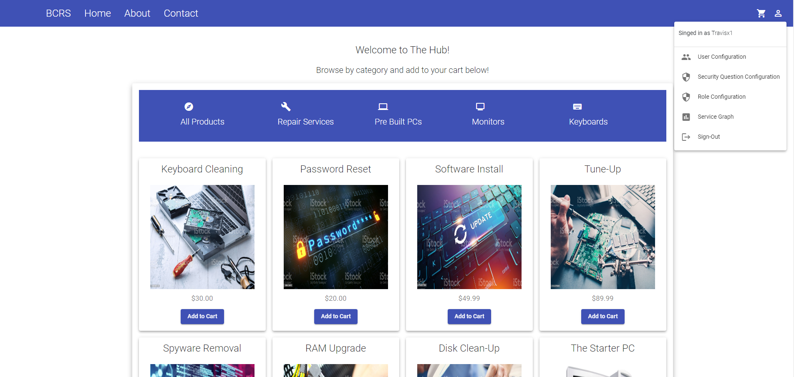
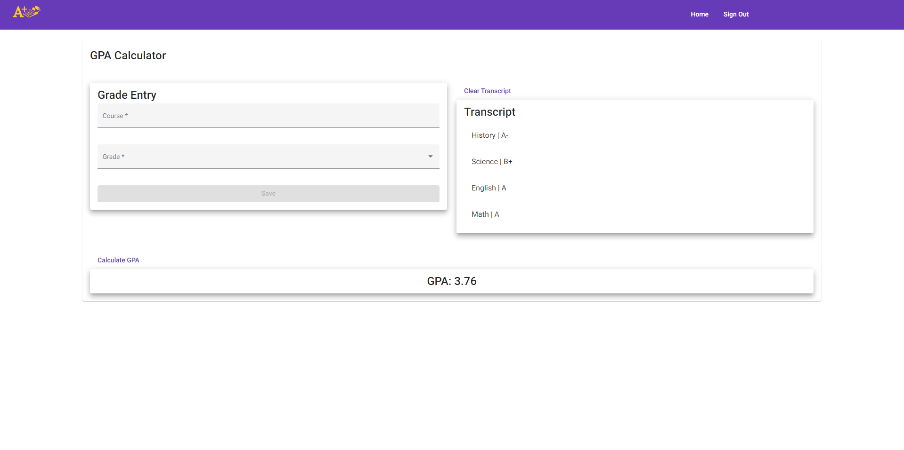
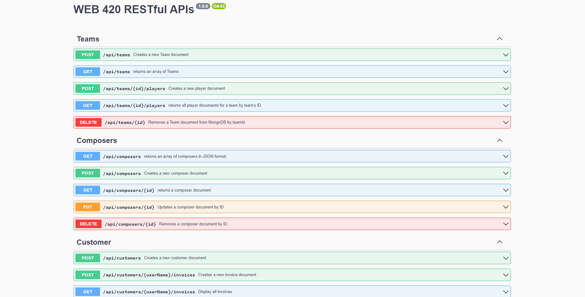

<about>
Hey!
I'm a young web developer who is constantly seeking to learn and grow. My interests lie more within back-end development,
but I enjoy front-end as well. I graduated from Bellevue University with a BS in Web Development. I have experience with
HTML/CSS, JavaScript, AngularJS, NodeJS, NoSQL, API Development, & MongoDB.
</about>
<projects>



</projects>
<me>
When I am not coding, I enjoy spending my time at the gym, playing video games, and reading.
I am also an avid supporter of Liverpool FC, a European football club.
Here is the cat tax- his name is Tobi.